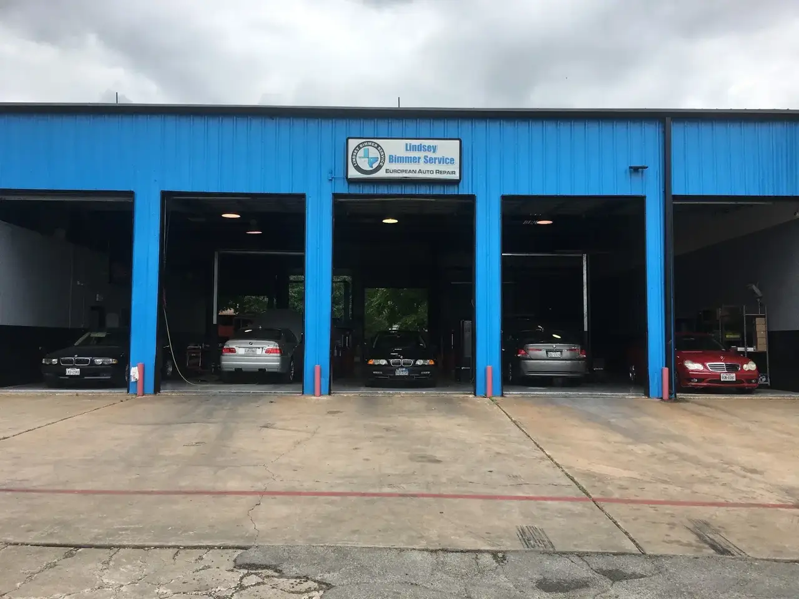
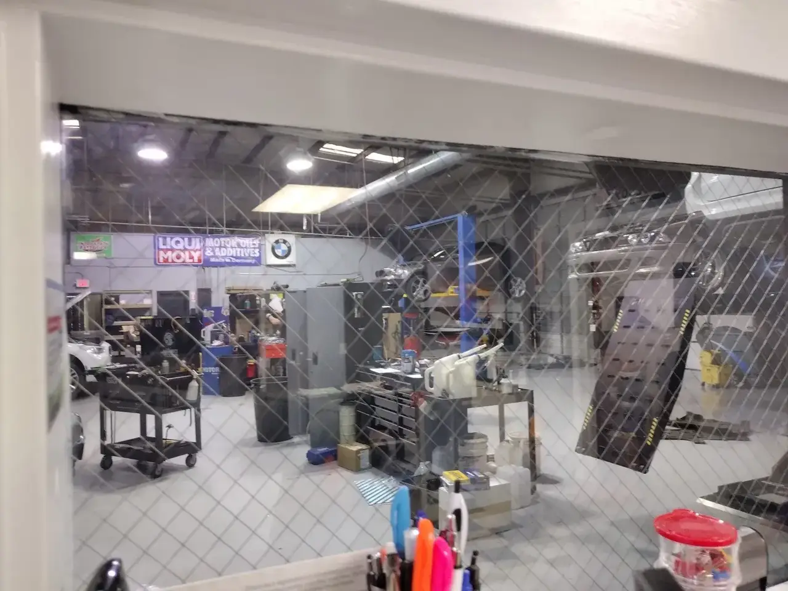
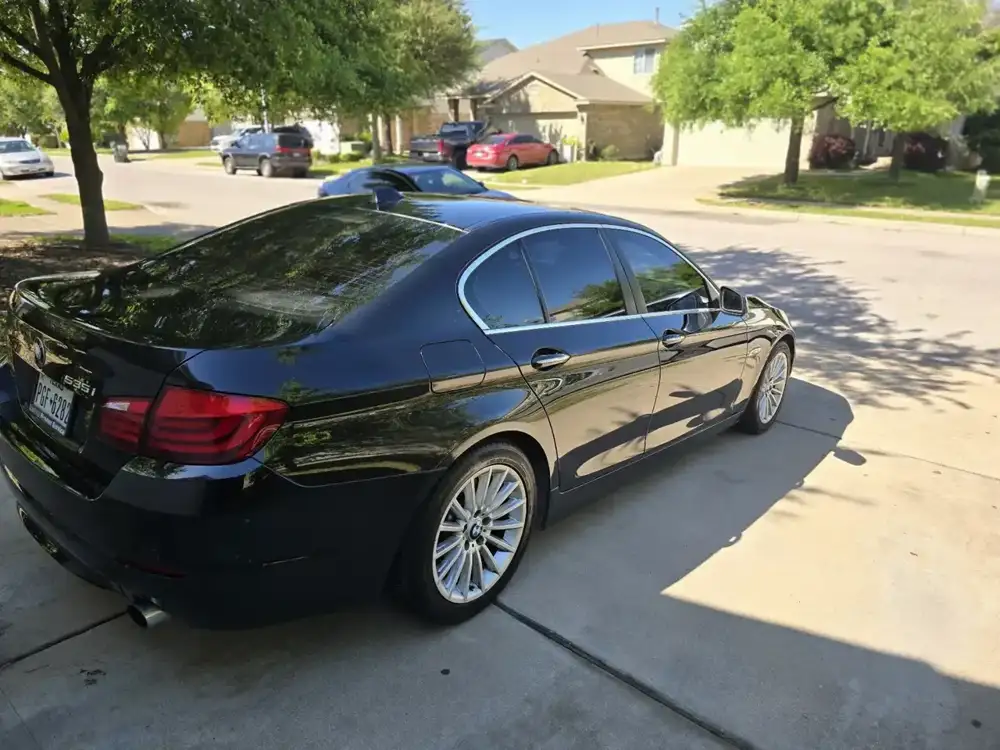
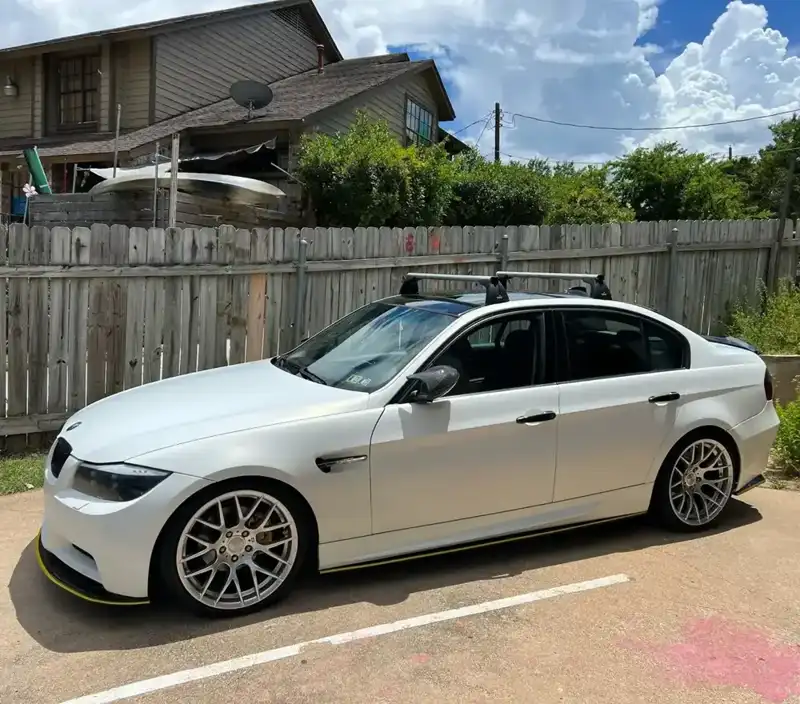
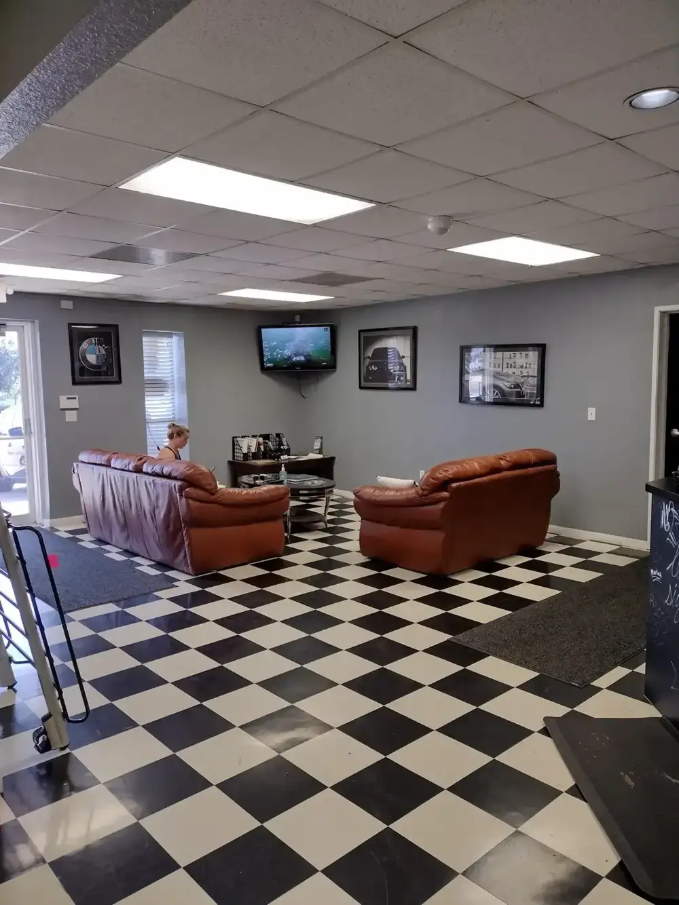
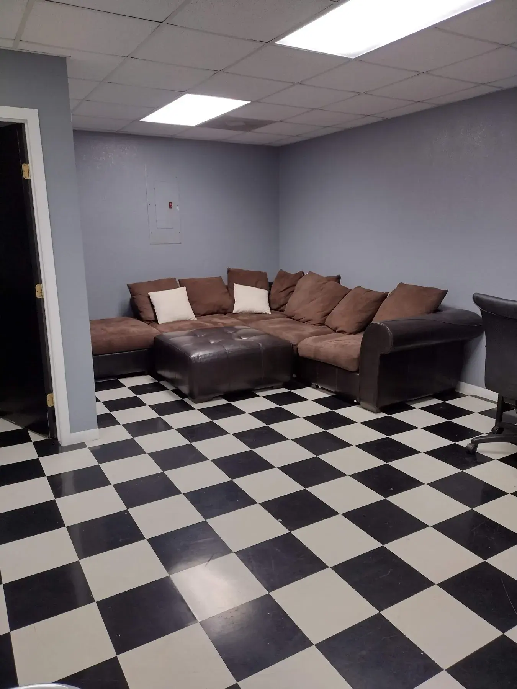
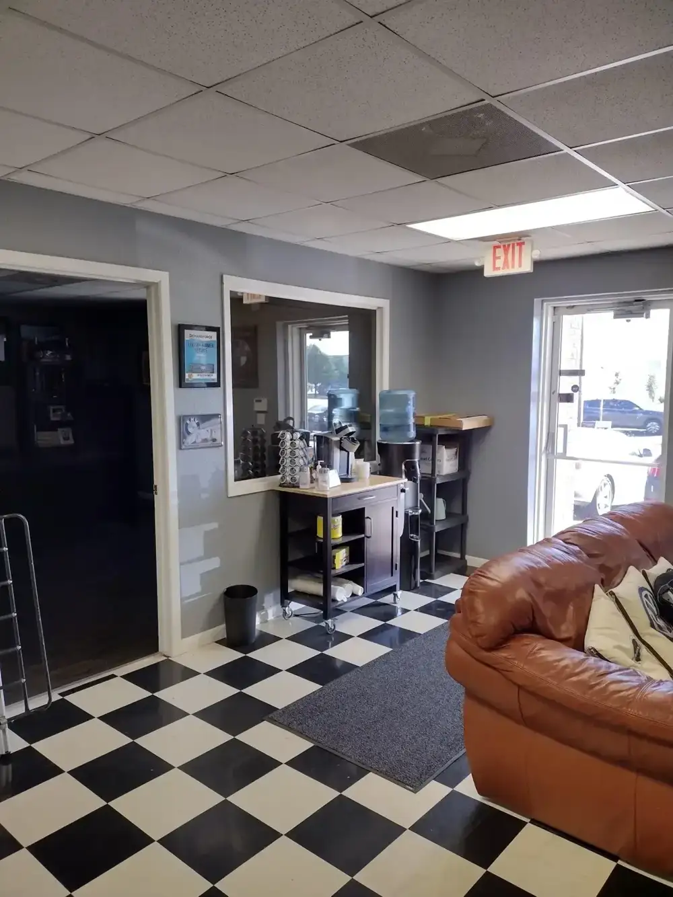
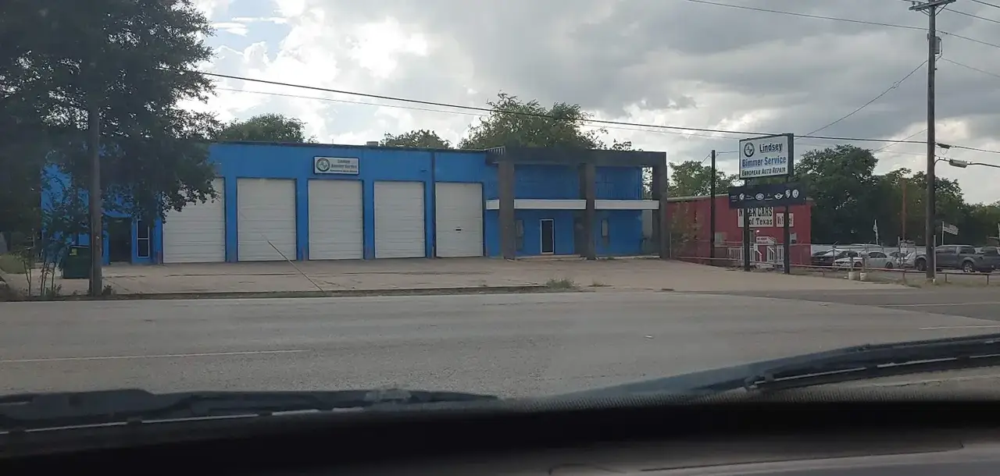
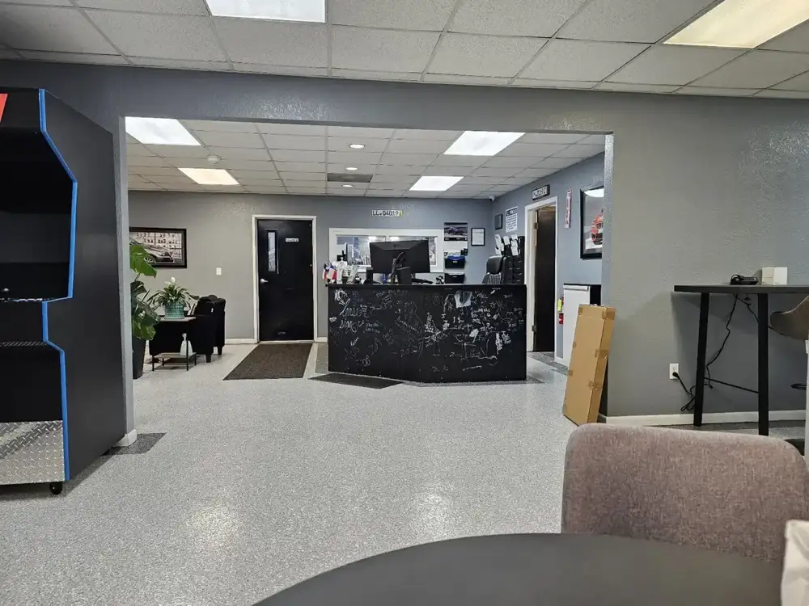

Brakes, alignment and suspension
Brake repair, alignments and suspension work on the Hunter alignment rack.
- Brake repair
- Alignments
- Suspensions

European auto repair · Cedar Park, TX
BMW, Mini, Mercedes-Benz, Audi, Volkswagen and Porsche. Honest guidance, clear estimates.
Services
Factory-level tools and ISTA programming for European vehicles.
Brake repair, alignments and suspension work on the Hunter alignment rack.

Advanced diagnostics, engine repair and ISTA and ODIS programming.

Oil service, belts and hoses, clutches and transmissions, plus xDrive, allroad and 4MATIC.





HIGHLY HIGHLY recommend Lindsey Bimmer as they basically restored a 2002 BMW Z3 roadster that is extremely sentimental to our family. Amazing job with all services and parts replacements and could not be happier with everything they have done. I have been going there for services for about 10 years and I always recommend my friends to avoid the dealership and go see Josh and his team. Really Amazing!
Josh & Haleigh are extremely knowledgeable & caring people. I love taking my beautiful BMW there because I know they will treat her like she was theirs! I strongly urge anyone with a BMW to get their car serviced by them!
My 1st visit to Lindsey Bimmer Service this week and they exceeded my expectations! As I dropped my car, Haleigh introduced me to Ryan I believe who greeted me and we reviewed my car and the issue I was having. He provided great feedback and his comments gave me great confidence that they could resolve the issue. Immediately, I felt my experience would be positive.

About
Josh Lindsey started as a mobile BMW repair operation in 2009. First shop in June 2010, this bigger building in September 2016.
Josh and shop manager Haleigh Reel run it with ASE-certified technicians. Realistic repair plans keep ownership enjoyable, not overwhelming.
Call or stop by
2003 N Bell Blvd, Cedar Park, TX 78613 Directions
The blue shop on N Bell Blvd in Cedar Park. Mon–Fri, 8 AM–5 PM.